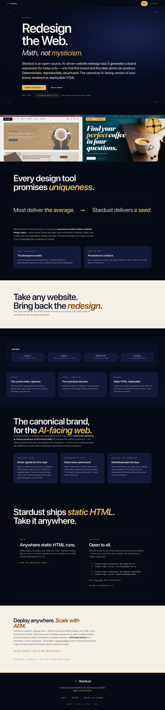
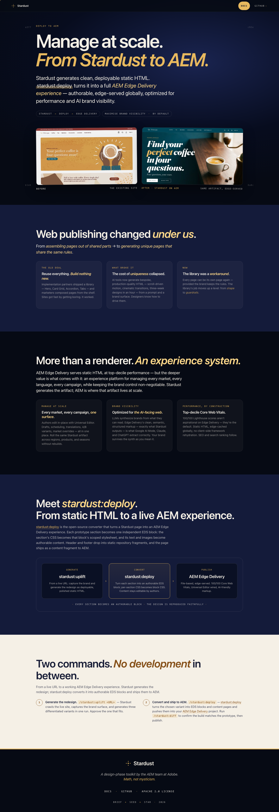
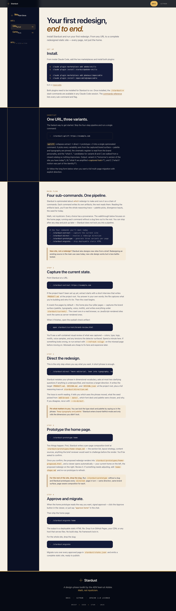
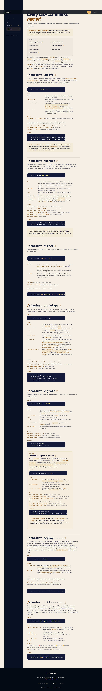

“Redesign the Web.”
Stardust is an open-source, AI-driven website redesign tool — turn any URL into brand-faithful, deployable static HTML. Built by the AEM team at Adobe. (og:description, pages/index.json)
https://stardust.style · extracted 2026-07-02What the crawl captured, and how. Source: _crawl-log.json + pages/*.json _provenance.
index · aem · docs · docs-commands. 0 failures. Discovery: headless, concurrency 4.
Live playwright renders, all HTTP 200. index + aem recaptured once after a vision check caught the animated hero H1 dropping.
3 type families (all system stacks), 9 radius values, 2 shadows, 4 gradient motifs, 10 patterns, 3 system components.
Omitted sections (no source data): Cross-promo reproduction (crossPromo.detected = false — no heading cluster repeats across ≥3 pages), Embed-dominated pages (no iframes on any page), repeated-heading list in Voice (no heading text recurs on ≥3 pages), Inputs in Components (no forms observed), webfont files in Typography (no @font-face rules — system stacks only), spacing scale bars (no detectable base grid in the captured padding samples).
Full-page captures at 1440px, cropped to the first viewport here. Source: assets/screenshots/.




Element-count-weighted computed colors across all 4 pages; the site's own custom-property names in parentheses. Occurrence counts are element counts, not pixel area — grounds score low, dense label pages score high. Source: _brand-extraction.json § palette.
Live computed values at 1440px. All three families are system stacks — no webfont files ship. Scale audit: ad-hoc (112 → 96 → 77.6 → 64 → 56 → 48 → 40 → 32 → 22 → 18 px; no single ratio). Source: _brand-extraction.json § type.
Stardust is an open-source, AI-driven website redesign tool. It generates a brand expression for today only — one that this brand and this date alone can produce. Deterministic, reproducible, structured. The canonical AI-facing version of your brand, rendered as deployable HTML.
Samples from the home page; frequencies aggregated across all 4 pages. Source: _brand-extraction.json § voice, § voiceTable.
| Label | Total | Pages |
|---|---|---|
| Docs | 9 | 4 |
| # | 8 | 1 (docs-commands heading anchors) |
| Stardust | 4 | 4 |
| GitHub › | 4 | 4 |
| GitHub | 4 | 4 |
| Apache 2.0 License | 4 | 4 |
| stardust:deploy | 3 | 2 |
| impeccable | 2 | 2 |
No heading text recurs on ≥3 pages — the repeated-heading list is empty (see Coverage).
0 of 75 headings equal their uppercase form — mixed case is the convention; uppercase lives only in mono labels via CSS.
of 75 total (the repeats are docs-commands' per-command Syntax / Flags / Writes / Example scaffolding).
Small, consistent vocabulary; nav and footer labels are identical on all 4 pages.
Where the captured site internally contradicts itself. Descriptive, not prescriptive — this is the decision agenda for /stardust:direct. Detector catalog run mechanically; rules not listed did not fire (T-radius-vocab: only 2 sub-16px radii clear the ≥10-occurrence bar; T-cta-vocab, T-link-content-free, T-no-tokens, T-tokens-unused, T-img-alt-generic, T-img-alt-empty, T-embed-dominance, T-nav-conflict, T-temporal-mark, T-contrast: triggers not met).
112 → 96 → 77.6 → 64 → 56 → 48 → 40 → 32 → 22 → 18 px, no consistent ratio. Direct will need to decide whether the target adopts a modular scale.
Source: _brand-extraction.json § type.scaleAuditOnly one logo variant captured (inline-svg, amber-on-transparent). The redesign will need a monochrome / inverted / on-cream variant set; direct should plan that. (favicon.svg and apple-touch-icon.png exist but were not captured as variants.)
Source: _brand-extraction.json § logoFour of eight palette entries appear in a single usage context only:
Direct will need to decide per color: drop, expand, or keep as a single-purpose accent.
Source: _brand-extraction.json § palette[].usedAsdocs-commands ships 8 anchor links whose visible text is just “#” (one per command heading). Outside the mechanical T-link-content-free closed list, but the same accessibility shape: screen readers announce “link, number sign” eight times. Direct should decide the anchor-affordance treatment.
Source: pages/docs-commands.json#ctas (labels “#” × 8)Radius vocabulary sorted by element count; shadows and signature gradients as captured. Source: _brand-extraction.json § motifs.
Detected component types and recurring patterns. Source: _brand-extraction.json § componentStyle, § motifs.patterns.
Landmark fingerprints repeated across pages. Source: _brand-extraction.json § systemComponents.
Sticky 60px deep-ink bar. Inline-SVG amber star mark + “Stardust” wordmark · CTAs: Docs (amber mono pill) · GitHub ›. Example: index → header .nav-row
Centered mark + wordmark · “A design-phase toolkit by the AEM team at Adobe. Math, not mysticism.” · links Docs · GitHub · Apache 2.0 License · mono sign-off “brief + seed = star · 2026”. Example: index → footer
Fixed ink panel with numbered items Get started 01 · Commands 02; active item in rgba(232,185,94,.12) with #ffd98a text. Example: docs.
Source: _brand-extraction.json § spacing (from the site's own --pad / --maxw / --nav-height custom properties) and § motifs.borderRadius.
No base spacing unit was detectable from the captured padding samples (8, 14, 16, 24 px + the clamp) — the scale bar row is omitted; direct should decide whether the target adopts a grid.